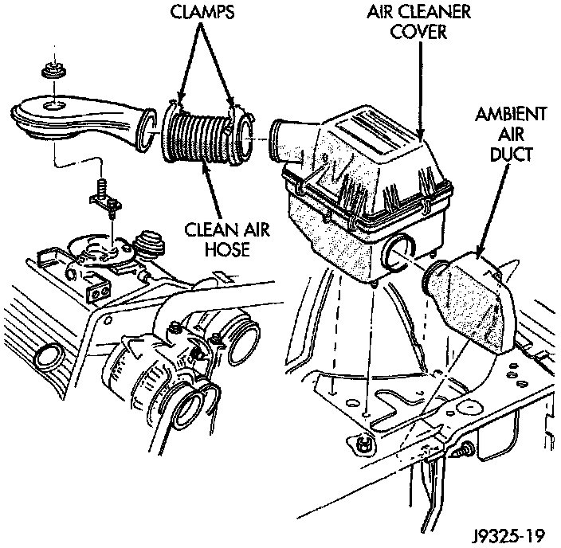
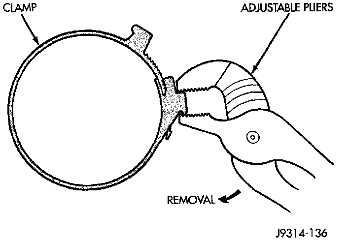
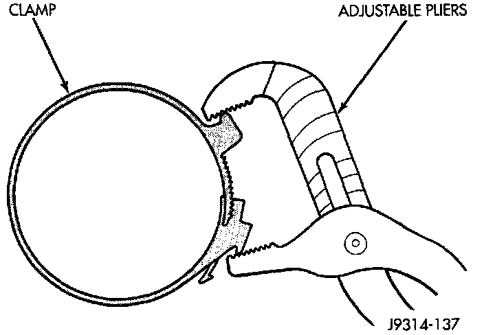

Air Cleaner Housing: Service and Repair
AIR CLEANER HOUSING REMOVALFig. 83 Air Cleaner (V8 Shown 6-Cylinder Similar):

Fig. 84 Clamp Removal:

1. Unlock clean air hose clamp (Fig. 83) at air cleaner cover. To unlock the clamp, attach adjustable pliers to clamp and rotate pliers as shown in (Fig. 84). Remove clean air hose at cover.
2. Remove crankcase breather/filter hose at air cleaner cover.
3. From under vehicle, remove three housing nuts (Fig. 83).
4. Release the air cleaner housing from the ambient air duct and remove housing from vehicle.
INSTALLATION
1. Position air cleaner housing to body and ambient air duct (Fig. 83).
2. Install three nuts and tighten to 10 Nm (93 in. lbs.) torque.
3. Install crankcase breather/filter hose to cover.
Fig. 85 Clamp Installation:

4. Install clamp to cover. Compress the clamp snugly with adjustable pliers as shown in (Fig. 85).